第15章
如何用一枚骰子击溃全球经济？
1. 见鬼的招聘会
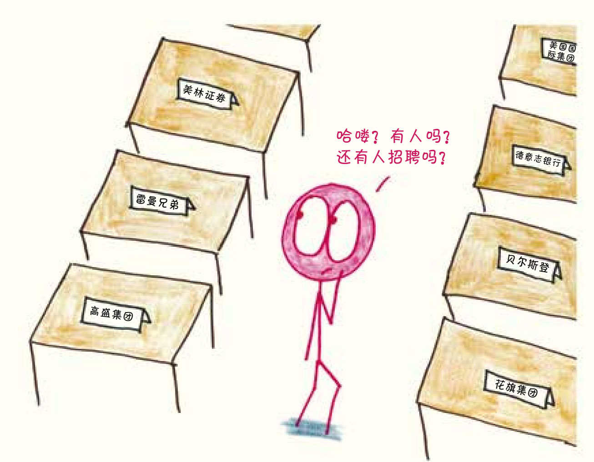
2008年9月，对我来说，可以到处蹭吃免费比萨饼的大学生活到了最后一年。我多少还是知道大学毕业后，只有有了工作和薪水才能买到比萨饼的，于是决定参加一年一度的招聘会。在往年的招聘会上，学校的体育馆里总会摆满雇主的摊位，并提供免费赠品（这个比较吸引人）和工作的申请机会。
然而，当我到达招聘会现场时，我的眼前是一个空荡荡的体育馆，就像一个鬼城。投资银行突然一致认为，现在或许不是招聘的好时机。
而且仍未重启成功。华尔街上演着莎士比亚悲剧的最后一幕：拥有百年历史的金融机构蒙上了尘埃，剑插在其中，发出喘息的死亡独白。记者们的报道充斥着诸如“最糟糕”“衰退”“自大萧条以来”这类的字眼，就连比萨饼皮都沾染了焦虑的气息。
在这一章中，我们将进入关于概率的最后一课，这可能是最难的一课。许多想成为概率学家的人都喜欢“独立”这个诱人的概念，把我们的世界想象成独立事件的集合。但如果概率要面对世界的不确定性，它就必须面对世界的互联性：包括这个世界的叙事线索和因果链。
举一个简单的例子：掷两个骰子后得到的两个数字之和，与掷一个骰子再将数字翻倍有什么区别？
在这两种情况下，最后得到的数字都是最小为2（两个1），最大为12（两个6）。
对于两个独立的骰子，极值只能以少数的几种方式展开（例如，只有两种组合能得到3），而中间值可以以多种方式展开（例如，有6种不同的组合可以得到7）。因此，中间值更有可能出现。
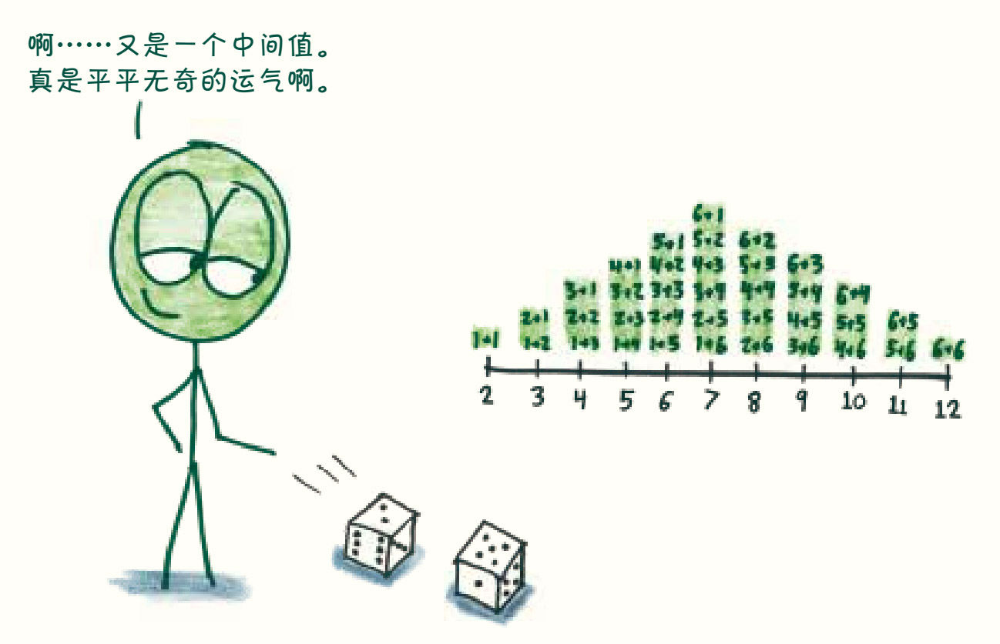
那么，如果只投掷一个骰子再将数字翻倍会怎样呢？现在，“第二轮”翻倍得到的数字完全取决于第一轮投掷的数字，我们眼前是伪装成两个事件的单个事件，极值出现的概率和中间值出现的概率是一样的。
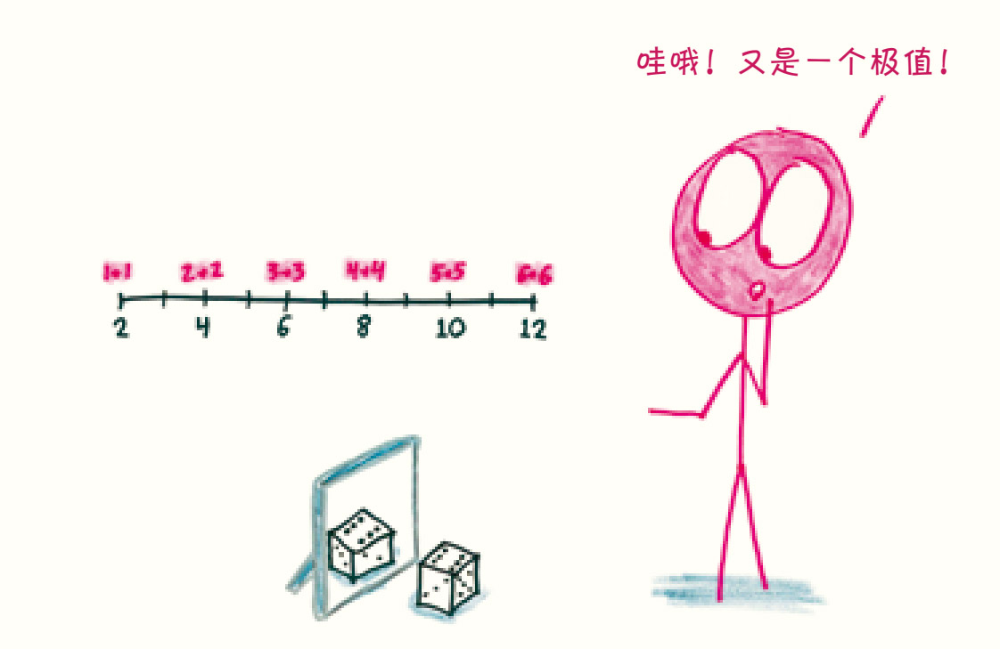
两种投掷方式的差别显而易见，独立事件突出了极值的特别性，而非独立事件则放大了极值的概率。
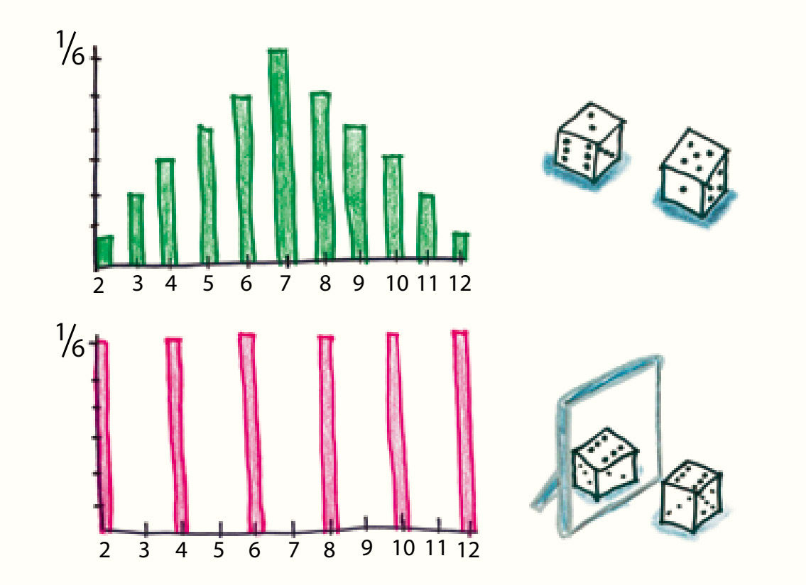
再进一步来看，我们把骰子的数量从2个增加到100万个。现在，结果的范围变成了从最小的100万（所有骰子都掷出“1”）到最大的600万（所有骰子都掷出“6”）。
如果每个骰子掷出的结果都独立于其他999 999个骰子，会怎样呢？我们会发现自己处于长期稳定趋势的世界中，兴奋的6和失望的1出现的比例相等。此外，所有骰子的总和极有可能正好落在中间，而不是两个极端。更确切地说，有99.999 999 5%的概率落在349万到351万之间，但几乎不可能得到最小值100万，这个概率小于“天文数字”分之一。
但是，如果我们不是掷100万个骰子呢？如果我们只掷一个骰子，然后将它的值乘以100万，结果会怎样？由于第二个步骤完全依赖于第一个步骤，无法提供任何概率的平衡，我们还是会得到随机的结果。在这个方案中，得到最小值100万就不是“猪会飞”的荒谬命题了，得到100万的概率高达六分之一。
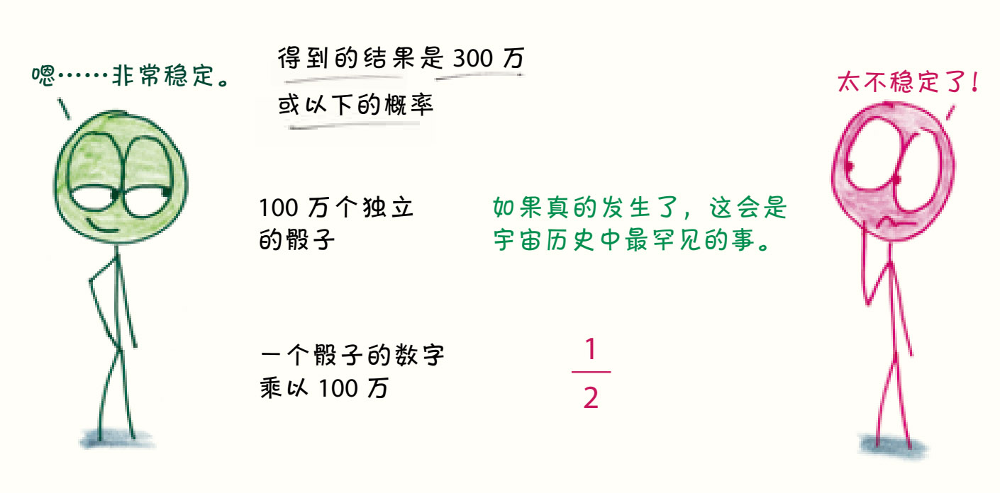
保险、多样化投资组合和篮子里鸡蛋的配置都依赖于同一个基本原则：通过组合事件来克服风险。只买一只股票是一场赌博，将多只股票组合起来，就得到了一项投资。
但这一切都取决于独立性。如果把鸡蛋分散在几个篮子里，却把篮子捆在一起，再装到同一辆小货车上，这样的组合就毫无意义了。现实世界中的事件是互相关联的，是无数个反馈回路和多米诺骨牌的集合，因此存在很多极值。在这个世界上，招聘会要么像节日，要么像葬礼，二者之间几乎没有交集；所有银行要么一起蓬勃发展，要么一起突然倒闭。
2. 万物皆有价
快问快答：华尔街银行的基本业务是什么？1
A. 通过资本的智能配置推动世界经济发展
B. 用从工人阶级口袋里抢来的血汗钱购买意大利西装
C. 为商品定价
如果你的答案是A，那么你应该是在华尔街工作。（嘿，这西服不错！是在意大利买的吗？）如果你的答案是B，那么我很荣幸你在读我的书，桑德斯参议员(7)。如果你的答案是C，那么你已经对本章的关键主题很熟悉了：金融部门的基本功能是决定事物的价值，这些事物包括股票、债券、期货、网页制作公司的合同、标准巴黎障碍期权、信用违约互换等。无论是要购买、销售，还是在网上搜索这些东西是不是我编造的，你都想知道这些东西的价值，毕竟你的生计就靠它了。
当然，问题在于定价并不容易。
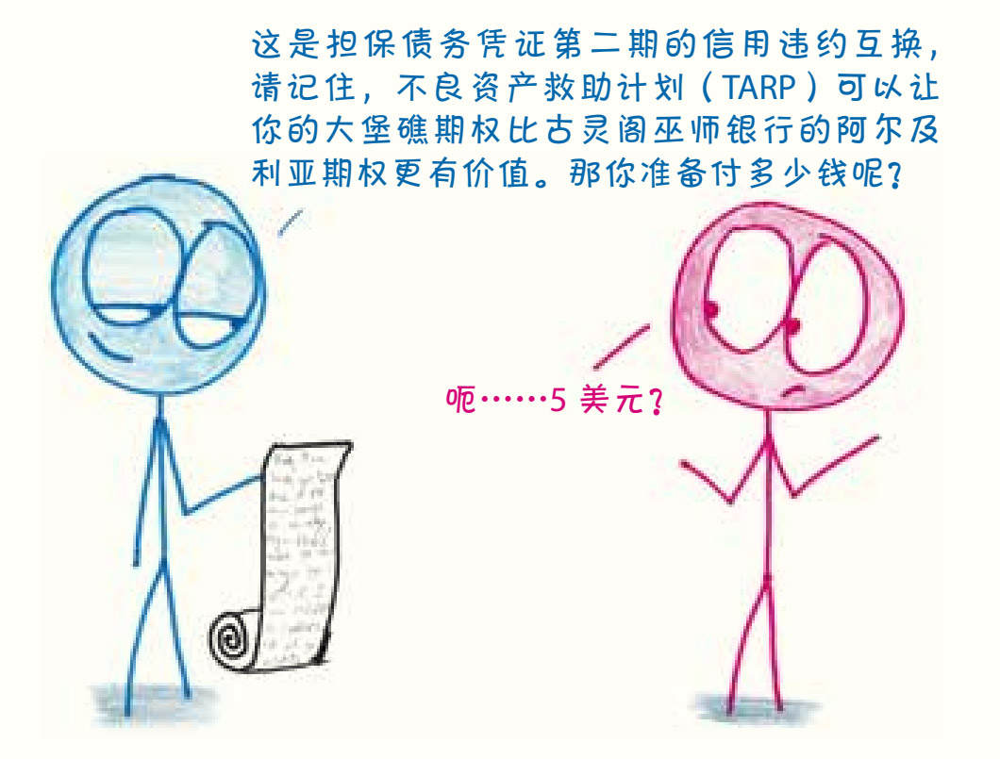
以债券为例。债券就是承诺会把钱偿还给你的债务。假设某人借钱买房，并承诺在五年内偿还10万美元。
那么，这张欠条对你来说值多少钱？
好吧，我们从第一项定价挑战开始：为时间定价。在金融行业“把握当下”的逻辑中，今天的1美元比明天的1美元更有价值。原因有二，首先是通货膨胀（会逐渐降低1美元的价值），其次是机会成本（如果明智地投资了1美元，下一年就会升值）。粗略估算，今天的1美元相当于明年的1.07美元。再继续计算下去，一年年累计相乘，你就会发现今天的1美元相当于5年后的1.40美元。
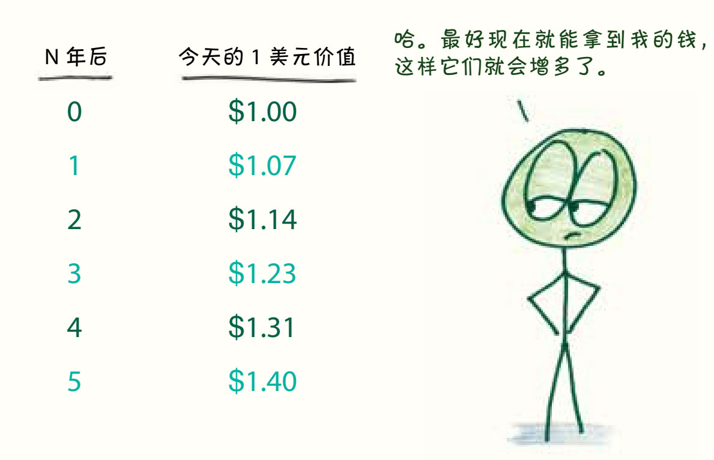
因此，在5年后只能拿回10万美元听起来并不太诱人，因为5年后的10万美元就相当于今天的7.1万美元。
这就是债券的真实价格吗？我们的分析是不是到这里就可以结束了，就此摆脱那些讨厌的华尔街气息对我们的影响？唉，才刚开始呢。我们还必须为风险定价：谁欠我们的债，我们能指望他们吗？如果欠债的是一个信用记录完美的双职工中产家庭，那我们还有机会。但是，如果我们的债务人是一个游手好闲的人，比如说，一个对比萨上瘾的刚毕业的大学生，他的爱好是画很糟糕的画，那么我们的债券可能会变得一文不值。
我们该如何调整价格？
非常简单：根据期望值。如果借出的钱有90%的概率得到偿还，那么债券的价值就是原来的90%。
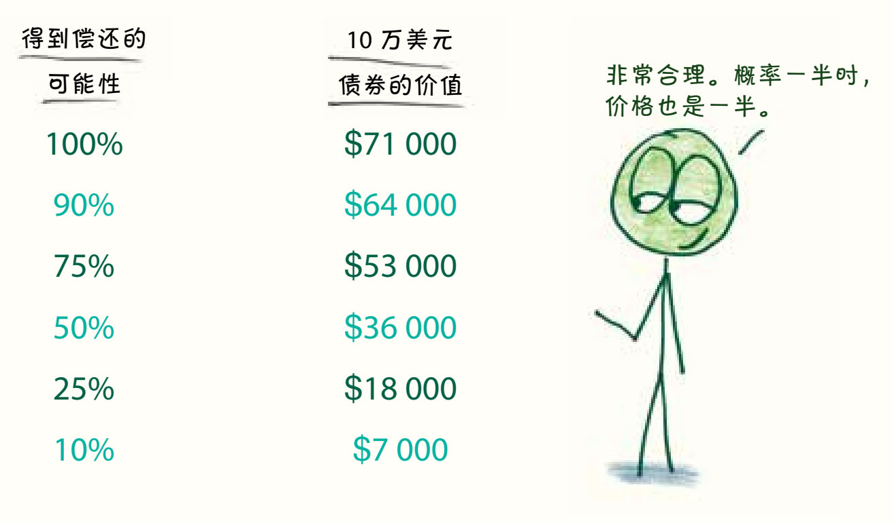
定价的过程还没结束。违约与否，不是非黑即白的，并不意味着债务人要么全部偿还，要么什么也不偿还。在现实中，法院和律师会进行干预，敲定一项协议，让债权人获得欠款的一部分，可能是1美元中的几美分，或者是接近全部。这样，我们的债券就像一张高风险的彩票，你要怎么给这么多品种的产品定价呢？
还是要根据期望值，在有理有据地估测2可能会得到的回报比例后，我们可以想象购买数百万这样的债券，再计算所有这些债券的长期平均值，而不是一味猜测这种债券不得而知的价格。
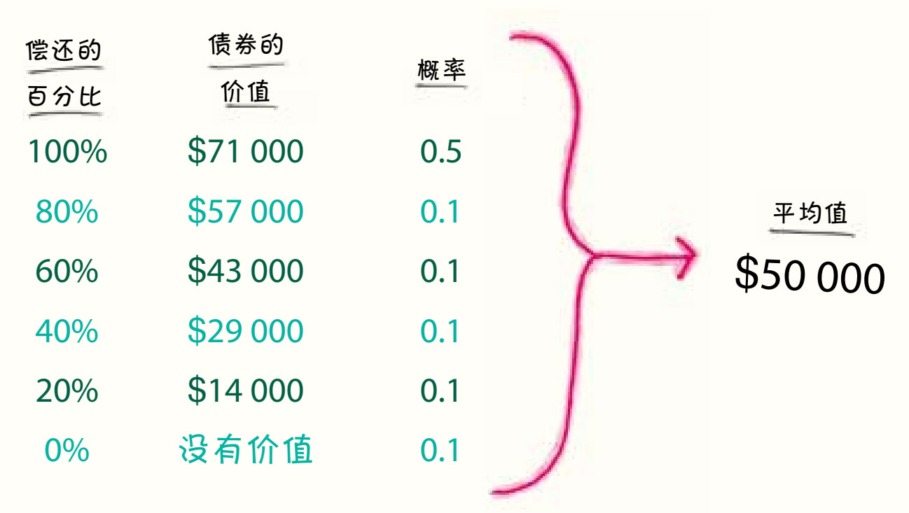
现在我们得出结果了，债券的定价应该为50 000美元。
在华尔街，给商品定价是基本的日常工作，对金融机构的生存至关重要。然而，数十年来，银行觉得有把握轻松评估的商品基本上只有股票（公司的一部分）和债券（债务的一部分）。各种“衍生品”是不包括在内的，这些“衍生品”既不是股票也不是债券，而是这二者的变种后代。它们游走在金融业的边缘，就像一个坐落在体面银行旁边的小赌场。
20世纪70年代，翻天覆地的变化发生了：定量分析（quantitative analysis）。借助数学建模的力量，数量分析专家们找到了为衍生品定价的方法——即便是那些和苏斯博士（Dr. Seuss）(8)一样古怪的衍生品。其中最复杂的是CDO——担保债务凭证3。
虽然它们的种类有很多，但最常见的组成结构是这样的：
1. 将数千份抵押贷款（就像我们之前定价的那份一样）打包成一份。
2. 将这些组合分成几层（称为“部分”），从“低风险”到“高风险”不等。
3. 当获得大量利息时，低风险部分的所有者首先得到利息，高风险部分的所有者最后得到利息。
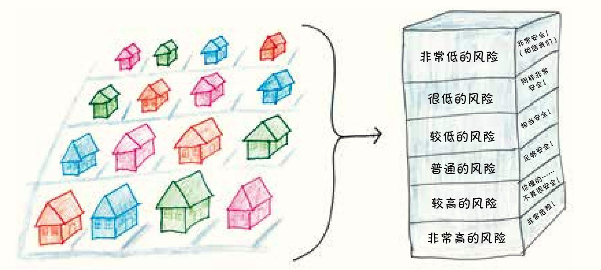
担保债务凭证提供了一份风险和回报的组合菜单，这份菜单可以提供任何口味。你愿意为一个安全的保障额外付出一些代价吗？尝尝美味的最上层吧。想寻找更便宜、风险更高的方案？那就试试最下面这一层的辛辣口味，你会喜欢的。或者，你希望风险和回报介于两者之间？好的，我和主厨说一下，他会准备好的。
投资者们咂巴着嘴，敲着桌子，想了解更多的菜式……直到2008年9月，他们收到了账单。
3. 房子的问题
让我们回到1936年，当时超现实主义画家勒内·马格利特画了一系列名为《房子的问题》的作品4。这些草图展示了一些位于特殊地点的房屋：架在树枝上，藏在悬崖的洞穴里，建在巨大的沟壑里。在我最喜欢的一幅画中，一所看起来很普通的房子矗立在空旷的平原上，它的两个邻居是一对巨大的骰子。
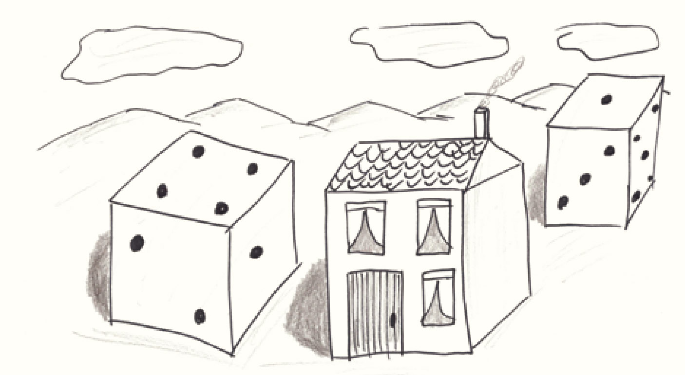
（不要被我的艺术才能骗了;这是一份近乎完美的临摹作品，不是原作）
马格利特的这幅画是什么意思呢？这可是那个曾经画过一只鸟抓住女士的鞋子，并把它命名为《上帝不是圣人》（God Is No Saint）的男人，我认为他是在挑战人们把家视为安全象征的想法。我没有故意吓你，但房子是一种危险和不稳定的东西，存在着风险。房子可能是你一生中最大的投资，价格相当于你年薪的好几倍，让你欠下了一辈子的债务。这所房子不是稳定的象征，而是可能性的象征。
在马格利特的视觉双关语出现的70年后，华尔街也面临着一个关于债券定价的小问题，问题是确定各种抵押贷款之间的关系。我说过，你和我是独立的个体。如果我欠债不还，也许对你没有影响。然而另一方面，由于我们处在共同的经济形势下，都逃不过经济大衰退，正如我们摆脱不了夏季流行歌曲一样。所以，如果我欠债不还，就意味着你可能也有危险。用华尔街的话来说，问题在于这样欠债不仅是一种特殊风险，还是一种系统性风险5。
我们的房子是成千上万个独立的骰子吗？还是它们就是同一个骰子，只是上面的数字被两面相对的镜子反射了几千次？
想象一下，有一个债券（按现实世界的标准来看很小）是根据我们此前讨论的1 000种抵押贷款构建的。因为单价为5万美元，所以1 000种抵押贷款的总价应该是5 000万美元。
现在，如果各项抵押贷款是独立的，华尔街的精英们就可以安心睡觉了。当然，我们的投资有可能比预期低100万美元，而损失200万美元的可能性非常小，500万美元的损失则是几乎不可能的，其概率小于十亿分之一。如果这样的独立性是稳定的，就几乎消除了灾难性损失的可能性。
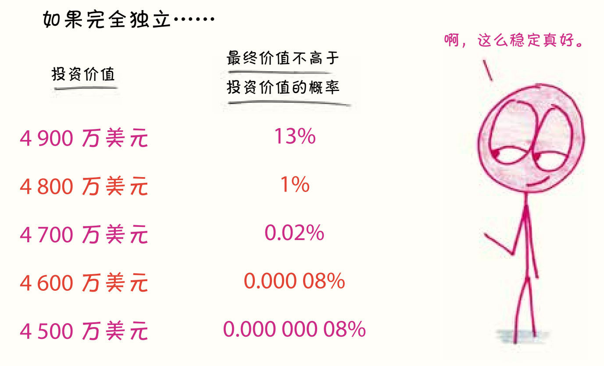
而反过来想，如果所有房子都和某一次投掷骰子的结果相关联，那么华尔街的精英们就将浑身冷汗、夜夜噩梦了。不难想象，不久前的稳定局面会在刹那间变得非常危险。在这笔交易中，我们的投资损失近一半的概率高达三分之一，而损失一切的概率达到了可怕的十分之一。
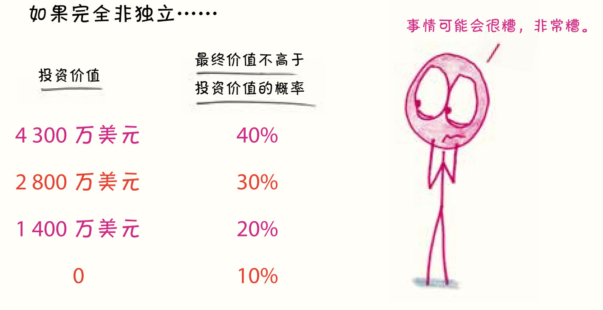
当然了，这两种假设都不太符合现实。我们的生活既不可能和别人始终同步，也不可能完全独立，连屋外的天气都和邻居不同。相反，我们的生活介于两者之间，我们和其他人的未来微妙地交织在一起。很明显，当我们之中有人欠债不还时，其他人欠债不还的可能性会增加——只是会增加多少？又是在什么条件下增加的呢？这些是概率模型可能面临的最微妙的挑战。
对此，华尔街提出的解决方案之一就是臭名昭著的“高斯连接函数”（Gaussian copula）6。这个函数衍生自人寿保险的计算公式，原本用于校正一对夫妻中一方在另一方死亡后幸存的概率，用“房子”代替“配偶”，用“欠债不还”代替“死亡”，就得到了一个计算抵押贷款之间依赖关系的模型。
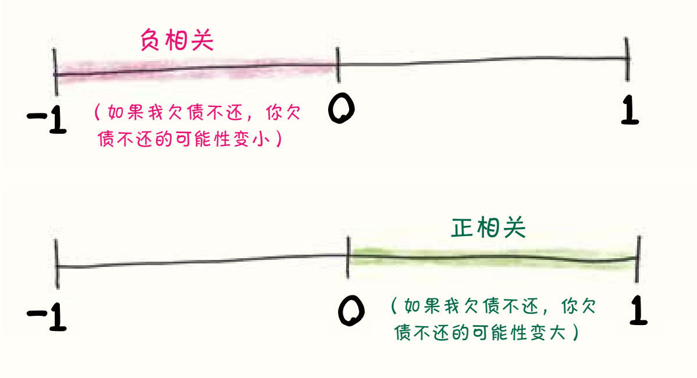
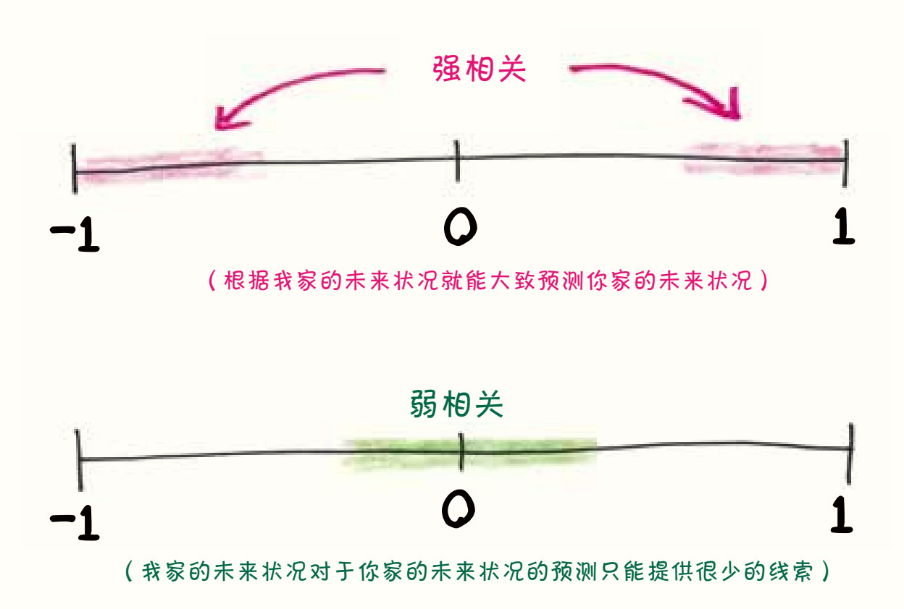
这个函数公式用一个数字来表示两个抵押贷款之间的关系：-1和1之间的相关系数。
值得肯定的是，连接函数是一种巧妙、简单而优雅的数学方法。然而，全球经济却并不是这么简单的，通过事后分析，连接函数（以及类似的方法）的缺陷显而易见。
首先，数据是片面的。华尔街的电脑里有的是各个城市的房价数据表，但大部分的数据都是最近同一时期的数据，碰巧在此期间房价稳步上涨。而这些模型大大提升了华尔街精英的信心，仿佛他们已经完成了整个美国房地产历史的研究。事实上，他们看到的不过是同一个骰子掷出的数字乘以100万后的结果罢了。
其次，这个函数模型原本是为夫妻建立的（因此英文为“copula”），但是房子和夫妻不同，并不是成对的，而是以松散的全国性市场的形式存在。一个单一的变化，比如当飙升的房价跌至谷底，就可以同时影响到这个国家的每一笔抵押贷款。当所有房子的命运以若隐若现的巨型多米诺骨牌的形式存在时，只担心一个多米诺骨牌会撞倒它旁边的邻居是非常愚蠢的。
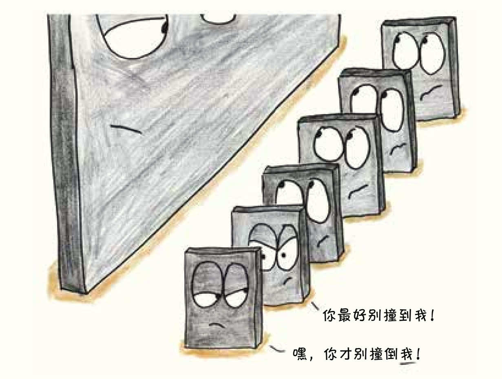
最后，如果你对统计学词汇有些了解，就会特别警惕“高斯分布”（正态分布）这个术语。在数学中，当你把许多独立的事件相加时，这个词就会出现，但这就是问题所在——这些事件不是独立的。
在以上所有方面，华尔街都忽视了马格利特所看到的风险，最终导致了一场这位画家从未料想过的超现实灾难。不过，我们还没讨论到这个问题最糟糕的部分。尽管定价失误的债务抵押债券价值高达数万亿美元，造成了惨重的经济损失，但仍不足以解释2008年9月的金融危机。究竟是什么导致了金融危机的全面爆发？致命的那一拳来自何处？这其实是一个范围更大的概率失败案例。
4. 要么加倍、要么归零的60万亿美元
如果你读过上一章，你就会知道为整个家庭的幸福和欢笑购买保险是有意义的。我不能承受失去房子的痛苦（否则比萨饼要送到哪里？），所以我愿意每个月支付一点儿额外的费用，这样如果房子不幸被烧毁，我还可以得到一大笔钱。通过为房子投保，我消除了自己面临的风险，保险公司实现了盈利，又是一个双赢的交易。
但是，我想到一个奇怪的漏洞：如果你给我的房子投保怎么办？
你可以按我说的试试，平时定期支付小额款项，当灾难发生时，就会为你带来一大笔意外之财。这复制了保险的金融结构，但和保险的目的却不同，这只是一场赌博，一场非赢即输的零和游戏。如果我的房子被烧毁，就是你赢；如果我的房子安全，保险公司就会赢。更奇怪的是，如果成千上万的人都这么做，每个人都为我的房子买保险，那么一旦我的房子被烧毁了，他们是不是都躺赢了呢？
如果真是这样，当我开始收到匿名的礼物时，比如便宜的鞭炮和手榴弹，我可能会惴惴不安。但在这种情况下，我不是唯一一个辗转反侧的人：保险公司甚至比我更害怕。如果我的房子被烧毁了，他们就只能手捧灰烬，准备支付巨额的赔偿款。
这就是为什么没有保险公司会同意这种情况。95%的轻松获利机会无法抵消5%的彻底破产概率。
可惜没人向华尔街的精英们指出这一点。
对华尔街来说，厄运伴随着三个字母的首字母缩略词：CDS。它代表“信用违约互换”（credit default swap）7，大致上可以看作一种CDO的保险方案。由客户定期支付适度的费用，只要CDO继续支付利息，就什么都不会发生，但当抵押贷款违约达到一定数量时，CDS就意味着一笔巨额的支出。
到目前为止，一切都很合理。但猜猜华尔街接下来都做了些什么？他们为每一个CDO都出售了数十个CDS。这和用同一栋房子卖了几十份保单几乎没有区别，当然，上面的金额要比房子的保单大得多。到2008年年初，这一数字已经达到60万亿美元，大概相当于全球的生产总值。
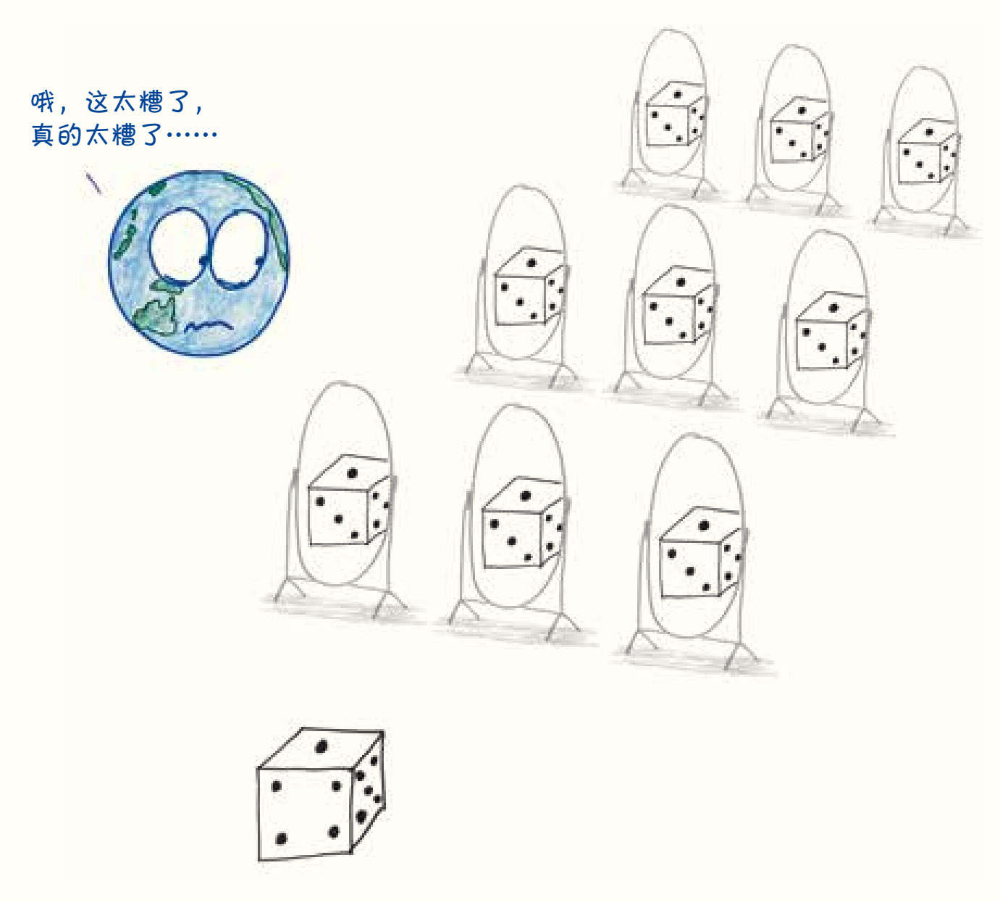
现在我们来快速回顾一下，CDO原本设计的目的是实现100万个骰子投掷结果的稳定性，而实际上，它们却体现了单个骰子投掷结果的脆弱性。CDS不断地翻倍，直到这场赌博的规模大到足以危及整个世界经济。这一切自然引发了一个问题：
华尔街的精英怎么会这么愚蠢呢？8
你从最顶尖的大学里招聘到最优秀的人才，为他们购买价值百万美元的超级计算机，给他们支付丰厚的薪水，让他们每周工作90个小时……可是当你走进办公室时，却发现他们在一边尖叫，一边把叉子塞进墙上的插座里？
我希望我能将这些“独立VS非独立”的错误当作一次性的异常情况，只属于CDO和CDS的特殊情况。但天不遂人愿，事态是非常严峻的，这种错误一直延伸到金融市场的核心。
5. 我们都将化作灰烬
冒着被称为新自由主义的“托儿”的风险，我要阐述自己的信念：市场经济是一种非常好的经济体制。我还要再说得更进一步：它的运行和调控真的很有效。
比方说，这个星球上恰好有一种叫作“苹果”的美味水果。我们应该如何分配它们？如果农民种的苹果比消费者想要的多，我们会发现成堆的美味苹果腐烂在街头。如果消费者想要的苹果比农民种的多，我们就会看到陌生人为了抢到最后一个苹果打得不可开交。然而，尽管困难重重，我们还是设法种出了适量的苹果。
这其中有什么诀窍吗？诀窍就是价格。虽然我们认为价格决定了我们的行为（“太贵了，所以我不会买”），但事实正好相反，我们每个人的选择都会对价格产生微小的影响。如果有足够多的人拒绝购买，价格就会下降；如果有足够多的人拒绝出售，价格就会上涨。价格是我们所有独立判断和决定的总和。
因此，与其他独立事件的总和一样，价格往往会产生平衡、稳定、合理的结果。亚里士多德称之为“群体的智慧”9，亚当·斯密称之为“看不见的手”，我把它叫作“独立的骰子又来了，但是这次，骰子是我们自己”。
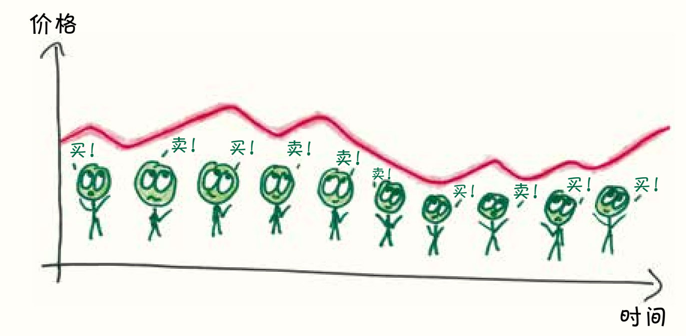
理论上，市场既然对苹果有用，对CDO也应该有用。有些人会高估它们的价值，而另一些人会低估它们的价值。但最终，一个充斥着独立投资者的市场将推动价格走向稳定的均衡状态。
但还有一个问题：绝大多数时候，投资者的行为往往不像数百万个独立的骰子，而更像是一个骰子乘以数百万倍。
以1987年的股市崩盘为例。10当年10月19日，房价暴跌，跌幅超过20%。这一切来得毫无预兆：没有撼动市场的新闻，没有引人注目的破产，美联储主席也没有发表：“噢，天哪，我现在有点儿慌”……市场就这样崩溃了。直到后来进行了复盘分析，人们才发现一个特殊的触发因素：许多华尔街公司都依赖于同样的投资组合管理基本理论，许多人甚至使用的是相同的软件。当市场下滑时，他们不约而同地出售了同样的资产，导致价格不断下跌，形成了恶性循环。
投资组合管理的全部目的就是通过多样化带来安全，但如果每个人都以完全相同的方式进行多样化，那么最终的市场就不能实现多样化。
如果投资者是自己独立判断价格的，那么每日的价格变化应该遵循钟形正态分布：有时候涨一点儿，有时候跌一点儿，但几乎不会涨得太快或太远。唉，但事实却不是如此。市场的波动大多遵循幂律分布，伴随着偶尔的大幅下跌。在遭遇地震、恐怖袭击以及高度敏感系统被严重破坏时，我们也会使用这一数学模型。
市场的变化并不像许多骰子的数字相加那样随机，而是像雪崩一样随机。
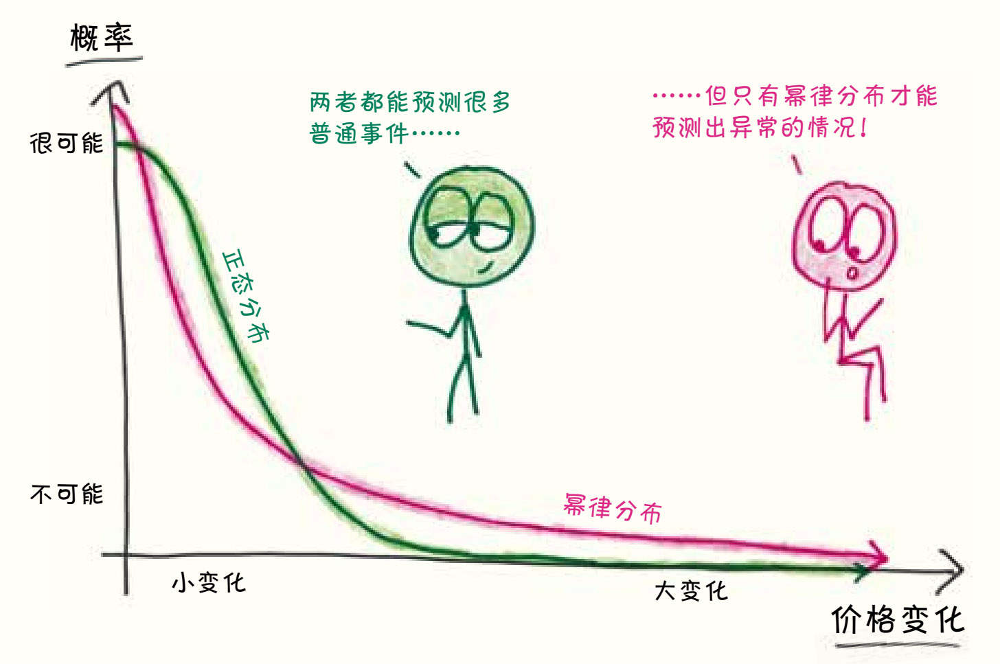
在2008年金融危机之前，许多银行都依赖于为数不多的几种模型（如高斯连接函数模型）。他们没有新的见解，而是围绕着一个单一的策略。甚至连评级机构——其目的和职责是提供独立分析——也只是照搬银行本身的说法，也没有独立意见。就这样，裁判成了啦啦队队长。
那么，回到2008年9月，为什么我到达在体育馆举办的招聘会时，却发现昏暗的体育馆只有一半的摊位有人？换句话来说，为什么金融体系会崩溃？
好吧，这是相当复杂的。正如在大多数失败案例中一样，无能是失败的原因之一（只要来我烤面包的现场看看就知道了），但错误的激励、盲目的乐观、赤裸裸的贪婪、令人眼花缭乱的复杂性、政府功能失调和利率也都是原因。这个简短的章节只讲述了故事的一小部分，围绕着一个特定的主题：进行独立假设的危险性在于，有时候非独立性才是真正占据主导地位的。
当非独立性占据了主导地位时，抵押贷款都一起违约，全部的CDS都要同时赔付，市场中的参与者围绕着类似的定价策略共同行动。
你想用一对骰子摧毁经济吗？说实话，这很简单。只要骗自己，你投掷的是一百万对骰子，然后把你的财富全部押在这对骰子上。
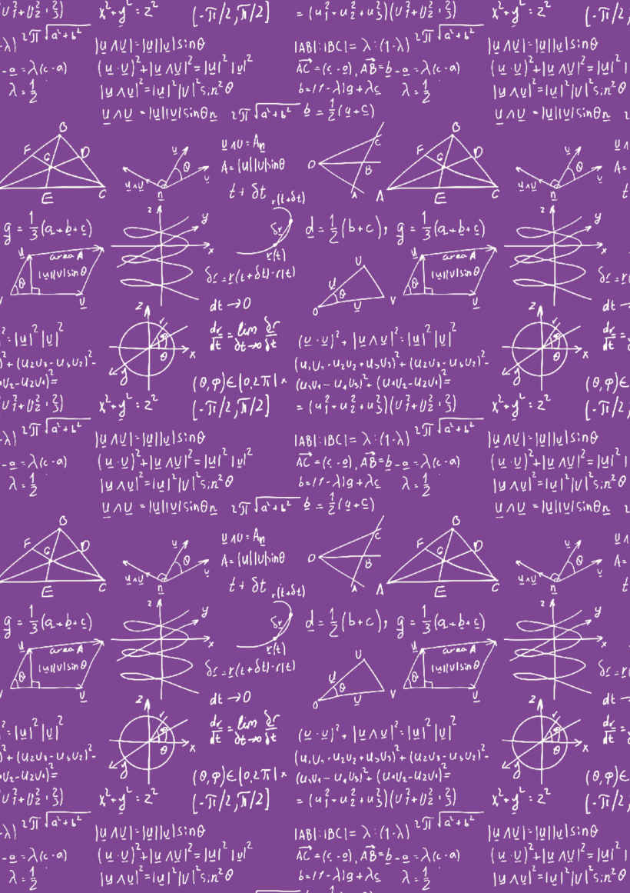